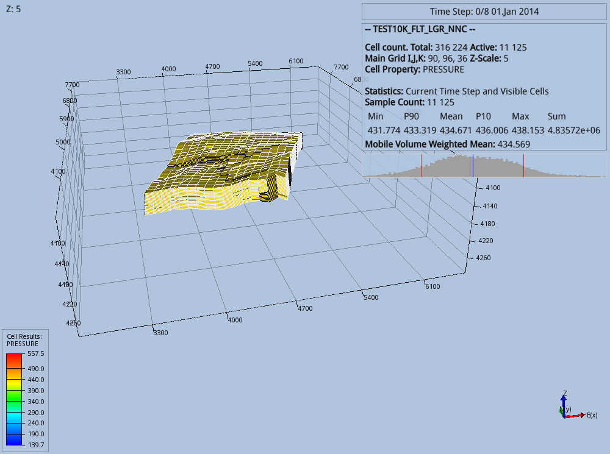
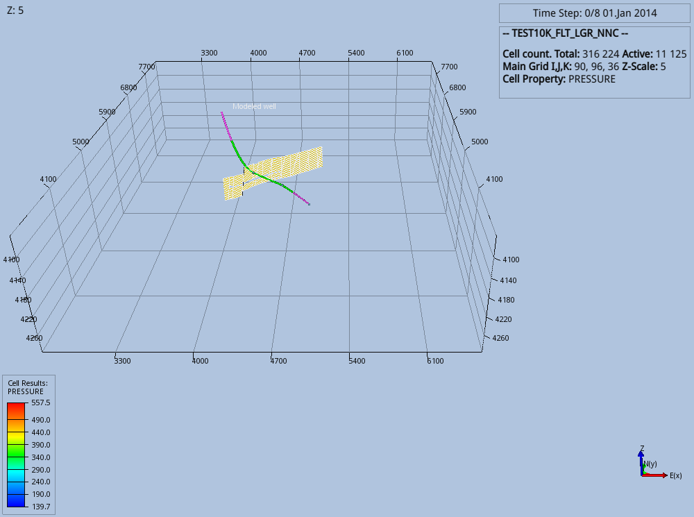

grid_default pass
Unmodified default 3D view of the SPE1 grid.

Source: OPM/ResInsight@6065be3e · source build run · generated 2026-11-26 08:35 UTC
22 passed, 1 not passing of 23 images
| fail | 1 |
|---|---|
| pass | 22 |
Run ID: 45784332394
Case filter (regex):
copies the case filter to the clipboard. On the opened page choose Run workflow, paste the filter and enter the run ID above (GitHub cannot prefill the form).
Or run it from a terminal with the GitHub CLI:

